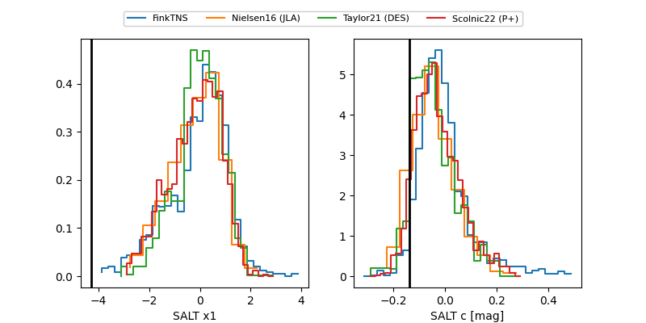

FINK: ZTF25abqeqid
Lasair: ZTF25abqeqid
ALeRCE: ZTF25abqeqid
TNS: 2025xiv
YSE: 2025xiv
ZTF25abqeqid (ztf,fink)
2025xiv (tns,yse)
equatorial (ra, dec) = (39.2521,+49.06924)
galactic (l, b) = (140.1459,-10.24174)

last atlaso=18.70, ztfg=18.80, ztfr=18.76
6 atlaso, 4 ztfg, 6 ztfr detections